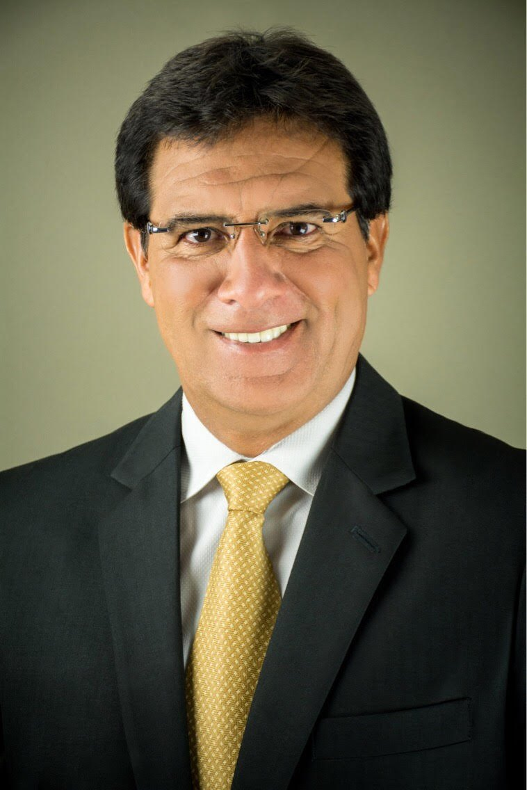
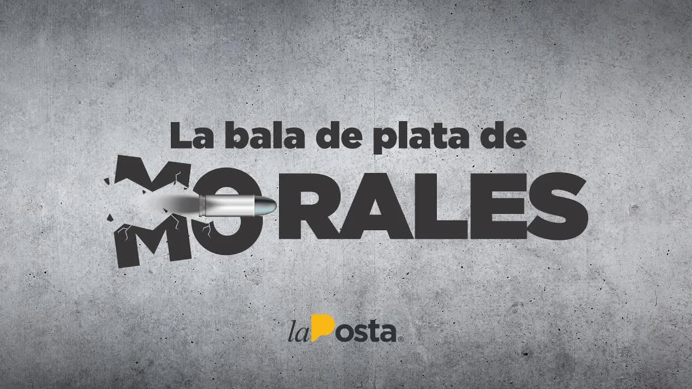
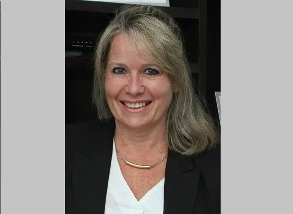
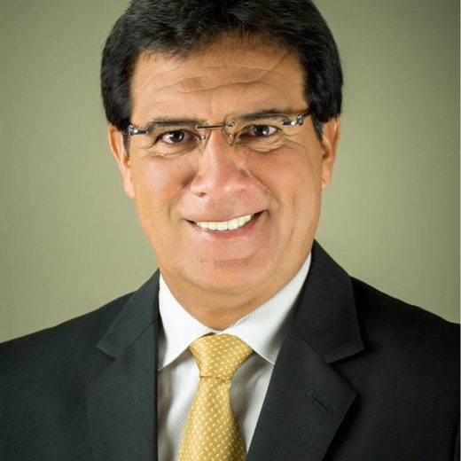
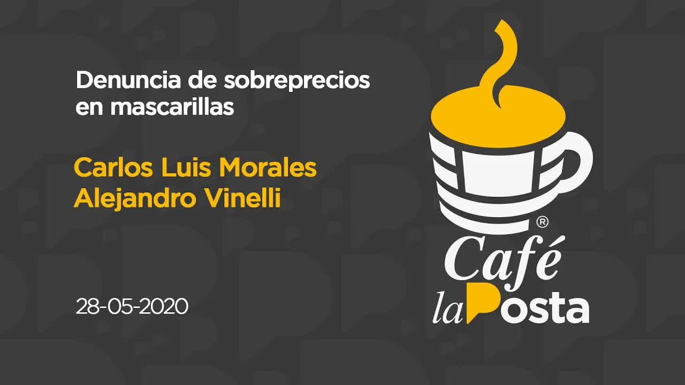
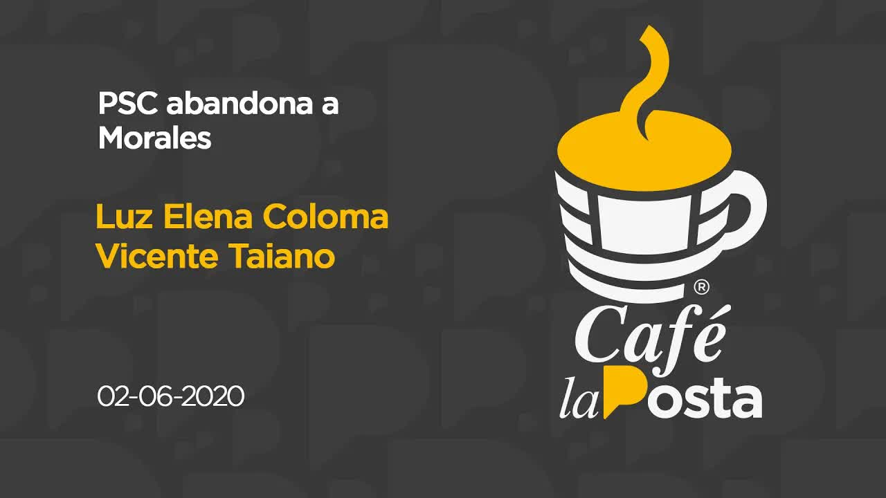
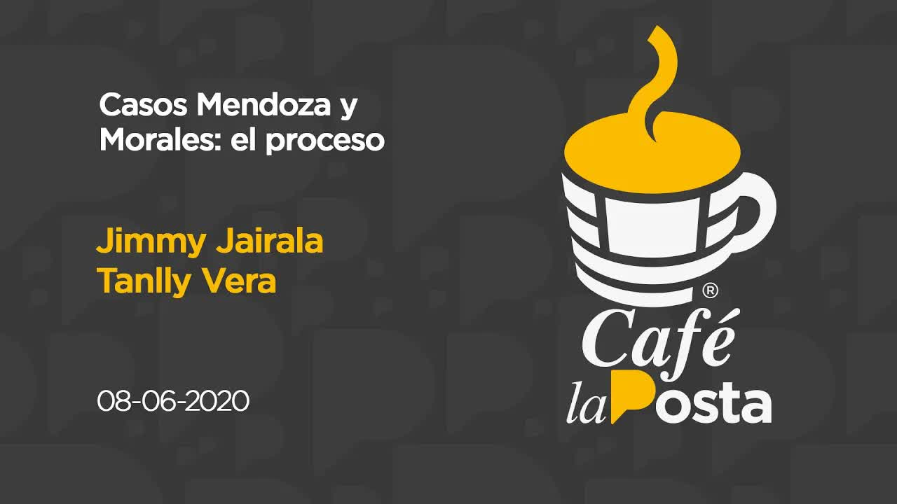
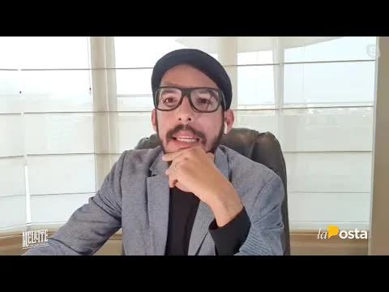
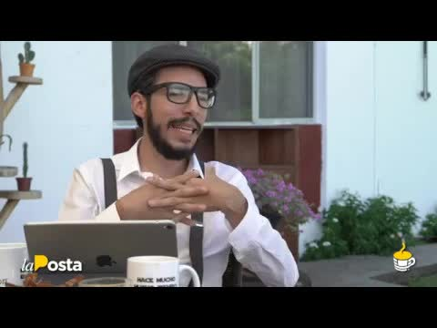
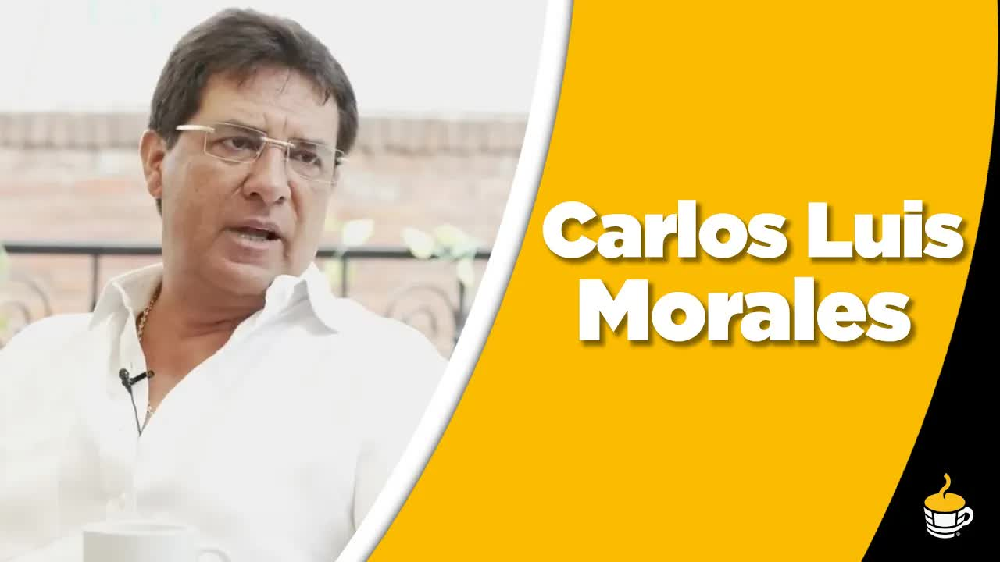

31 may 2020 · Los hilos del círculo de Morales
Mascarillas a 6,71
Carlos Luis Morales Benítez nació el 12 de junio de 1965. Fue arquero de Barcelona y de la selección en el Mundial de Italia 90, después presentador de deportes en televisión y después político: pasó por el roldosismo, por Centro Democrático de Jimmy Jairalá y por la alianza con el Partido Social Cristiano que lo llevó a la Prefectura del Guayas en mayo de 2019. En su primera entrevista con La Posta como prefecto electo prometió que los guayasenses sabrían hasta el último centavo y que jamás permitiría que le dijeran ladrón. La pandemia lo encontró ahí. Entre marzo y mayo de 2020 su Prefectura firmó unos quince contratos de emergencia por más de cinco millones de dólares. Dos se hicieron famosos: 70.000 mascarillas N95 a 6,71 dólares cada una, cuando en el mercado costaban tres o menos y había compras públicas a 2,40, y 5.000 pruebas rápidas de covid a 23,16 dólares, cuando el Municipio de Guayaquil las había comprado a 11.

La Fiscalía había allanado la Prefectura el 27 de mayo, en las oficinas de compras públicas y financiero, por presunto peculado. La Posta empezó el 28 de mayo de 2020 con la denuncia de sobreprecios: entrevistó al prefecto y, aparte, a Alejandro Vanelli, de SaludMed, la empresa de las pruebas PCR del Municipio de Quito, el otro escándalo del día. El 31 de mayo publicó un informe de cinco minutos, Los hilos del círculo de Morales, sobre otro contrato: 90.000 dólares por una proyección estadística del covid adjudicados a Zerasamiz S.A. Su presidente, Hermelindo Velásquez Castro, vive en Chongón, un sector popular a las afueras de Guayaquil, y contó a cámara que no sabe nada de empresas: un día funcionarios de la Prefectura le pidieron que prestara su firma.
Los hilos llevaban a la familia. El teléfono que Velásquez usó para firmar era el mismo de Cicerocorp, otra contratista de la Prefectura que él también preside. La contabilidad de Cicerocorp la lleva Miguel Ángel Calderón, el mismo contador de Talleres Multimarcas Autostar, la empresa de Xavier Vélez Velásquez y de su hijo Xavier Vélez Arcos, padre y hermano de Andrés Vélez Arcos, el hijastro del prefecto. Zerasamiz tiene entre sus accionistas a Mario Mantilla Cuello, dueño de Global Company, cuya contadora comparte teléfono registrado con Recreate y Comunicaciones, la empresa de Sandra Arcos, la esposa de Morales. Primicias las describió como seis empresas de papel con gerentes, accionistas, contadores y hasta el mismo número de teléfono en común.
$ 90.000por una proyección estadística del covid, adjudicados a una empresa cuyo presidente prestó la firma.
La bala de plata
El 1 de junio el PSC le dio la espalda: Jaime Nebot y Cynthia Viteri pidieron que se lo investigara y los asambleístas de la bancada firmaron un comunicado con tres salidas: entregar a los responsables, entregarse él o renunciar. El 2 de junio Morales denunció públicamente a los hijos de su esposa por las irregularidades en las adjudicaciones y dijo que actuaría caiga quien caiga; ese día Vicente Taiano anunció en Café la Posta que el partido iría por su destitución en el Consejo Provincial. La madrugada del 3 de junio una fuerza de tarea de la Fiscalía, con 45 fiscales, ejecutó allanamientos y detenciones simultáneas en Quito y Guayaquil por corrupción en la pandemia: en Guayaquil detuvo en su casa de la Kennedy Norte a Abdalá Bucaram, por los hospitales del Seguro Social, y allanó la casa del prefecto en la vía a Samborondón por presunto tráfico de influencias y peculado en la compra de insumos, pruebas y mascarillas. Esa mañana la Policía lo buscaba; horas después fue detenido. Sus hijastros estaban en paradero desconocido y su esposa terminó prófuga. El 4 de junio Morales fue procesado por tráfico de influencias, artículo 285 del código penal, tres a cinco años.
Morales se defendió en La Posta el 28 de mayo: aquí no hay ninguna corrupción, compró en un mercado colapsado cuando morían seiscientas personas al día en el Guayas y tenía 430 obreros que proteger; la suya fue la oferta más barata entre las que calificaron, dijo, y separó del cargo a Verónica Loaiza, directora de Desarrollo Comunitario, que firmó el contrato. El presupuesto anual de la Prefectura del Guayas rondaba los 300 millones de dólares, 168 comprometidos en deuda con contratistas.

Ese 4 de junio La Posta publicó la bala de plata. La investigación había puesto el ojo en un contrato de Morales con Bigmart, una empresa cuyo dueño, Pedro Morán, era el contador de Sandra Arcos. Al tirar del hilo, Morán resultó ser además exgerente y exsocio de Andrés Vélez Arcos, el hijastro, en Cynthialand, una firma de asesorías y consultorías hoy de Andrés y Xavier Vélez Arcos, con pocos clientes: casi todas las contratistas de la Prefectura. El esquema, según La Posta: la Prefectura contrata a Renauta, Bigmart o Cynthialand para exhibiciones deportivas, uniformes o administración de canchas; las empresas vinculadas a los hijastros cobran, simulan una asesoría con Cynthialand para justificar el pago, y Cynthialand traslada el 75 por ciento a compañías declaradas fantasmas por el Servicio de Rentas Internas, que sirven para retirar el dinero en efectivo. La Posta lo dijo con claridad: no había probado la participación directa del prefecto en la trama, aunque era difícil dudar de que supiera.
Prefectura del Guayas
El árbol de los contratos
Carlos Luis Morales
Prefecto del Guayas (2019-2020). Antes asesor de la Prefectura en Deportes (2014-2016) y concejal de Guayaquil (2017-2018)
Sandra Arcos
Esposa. Dueña de Recreate y Comunicaciones S.A.
Andrés Vélez Arcos
Hijastro. Dueño de Cynthialand junto a su hermano Xavier; antes socio en ella de Pedro Morán. Accionista de la offshore panameña
Xavier Vélez Arcos
Hijastro. Accionista de Talleres Multimarcas Autostar con su padre, Xavier Vélez Velásquez
Pedro Morán
Contador de la familia Arcos, dueño de Bigmart; fue gerente y socio de Cynthialand. Recibió un contrato de 150.000 dólares poco antes de la emergencia
Miguel Ángel Calderón
Contador. Llevaba las cuentas de Cicerocorp, empresa de papel contratista, y de Talleres Multimarcas
Hermelindo Velásquez Castro
Ciudadano de Chongón que prestó su firma. Principal accionista y presidente de Zerasamiz (contrato de 90.000 dólares) y presidente de Cicerocorp
Mario Mantilla Cuello
Accionista de Zerasamiz y dueño de Global Company, cuya contadora comparte teléfono registrado con Recreate y Comunicaciones
Zerasamiz S.A.Cicerocorp S.A.Global Company S.A.Recreate y Comunicaciones S.A.Talleres Multimarcas Autostar S.A.CynthialandBigmart
PanamáSociedad panameña creada en 2017 a nombre de Andrés y Xavier Vélez Arcos y de Sandra Arcos. No constaba en la declaración juramentada del prefecto; la ley prohíbe a los dignatarios tener vínculos con paraísos fiscales
Y no empezaba en 2019. La Posta rastreó los contratos públicos de esas empresas: trece con la Prefectura por 1.783.000 dólares, concentrados entre 2014 y 2016 y, en esos años, todos en el área de deportes; al menos doce se firmaron bajo la administración de Jimmy Jairalá, entonces aliado de Morales en Centro Democrático. En esos años Morales era asesor de la Prefectura, enrolado en la dirección de Deportes, la que firmaba. En 2017, cuando pasó a concejal de Guayaquil, los contratos con la Prefectura cesaron y aparecieron contratos municipales por algo más de 250.000 dólares en 2017 y 2018. Cuando volvió a la Prefectura, volvieron las contratistas: poco antes de la emergencia, 150.000 dólares a nombre de Pedro Morán. Y como toda historia de cuello blanco, terminaba en Panamá: una sociedad offshore creada en 2017 a nombre de Andrés y Xavier Vélez Arcos y de Sandra Arcos, que no constaba en la declaración juramentada que la ley obliga a presentar y que prohíbe a los dignatarios tener vínculos con paraísos fiscales.
Cuando uno tira del hilo, la verdad se desnuda y es de dimensiones grotescas.
La Posta, La bala de plata de Morales, 4 de junio de 2020
Diecinueve días
Morales salió con medidas sustitutivas y grillete electrónico. El 5 de junio el PSC reunió a sus alcaldes con Cynthia Viteri y anunció la destitución: hacían falta 22 votos del Consejo Provincial, tenía 15 y el proceso podía tardar de 30 a 40 días. El 8 de junio Jimmy Jairalá comentó el caso en Café la Posta: en su administración no sonó ninguna alarma, dijo, porque las empresas estaban calificadas, hubo actas y auditorías de la Contraloría de Carlos Pólit, y el Municipio de Guayaquil firmó tres contratos más con las mismas compañías. El 22 de junio de 2020, a los 55 años, Carlos Luis Morales murió en Samborondón. Según informó La Posta, sufrió un infarto fulminante y la autopsia halló enfermedades graves preexistentes; Primicias reportó una neumonía asociada al coronavirus. La Fiscalía abrió una investigación por el fallecimiento. La Contraloría había determinado en su informe el presunto sobreprecio en las compras. Era el prefecto de la provincia más golpeada por la pandemia y murió a los dieciocho días de abierta la instrucción fiscal en su contra. La destitución nunca se concretó.
El 20 de agosto de 2020 La Posta mostró un sobre de manila remitido por un abogado Alejandro Vélez, muy probablemente Javier Alejandro Vélez Arcos, el hijastro, y encontrado en el doble fondo de un cajón. Adentro había documentos que le llegaron al prefecto en los días en que peleaba por sostenerse en el cargo. La Posta lo llamó el testamento chueco de Morales: una carta en clave, dos fondos del rey, uno interno con la reina y uno externo; 5.000 mensuales para príncipes y princesas; el gasto operativo que generaría Bigote, es decir Nebot, en la guerra regional, es decir la destitución. Y dos tablas: una amarilla por 1,3 millones y una roja por 2,6, con la mordida por tipo de contrato: del 5 al 10 por ciento en vías y asfaltados, del 10 al 15 en estudios y fiscalizaciones, del 15 al 25 en consultorías y capacitaciones; proveedores a los que se les pedía el 7 o el 8; un listado de 85 personas para ingresar con sueldos de más de mil dólares. Morales no tenía declarada ninguna cuenta en el exterior, pero el sobre hablaba de fondos afuera. La Posta ofreció públicamente los originales a la Fiscalía. Para entonces la causa se mantenía contra su círculo: la esposa prófuga y los hijastros pidiendo caución, con un proceso adormecido una vez que el político había muerto. Ese programa también presentó a la nueva prefecta, Susana González: está todo más podrido de lo que imaginábamos, dijo; desvinculó a 200 personas, encontró 99 millones de deudas del Estado con la Prefectura y pidió auditar las dos concesiones viales, ampliadas hasta 2026 y 2029, que se llevaban 7 millones al mes.
18días entre la instrucción fiscal y la muerte de Morales
> $ 5 Men contratos de emergencia de la Prefectura
5 a 40 %la mordida por contrato según las tablas del testamento chueco
Cómo terminó
Sin Morales, el caso se desinfló. El 9 de noviembre de 2020, en la audiencia preparatoria, la fiscal se abstuvo de acusar a Sandra Arcos y a uno de sus hijos; fueron sobreseídos y absueltos en diciembre. Cinco quedaron fuera del proceso. El 12 de enero de 2021 un juez llamó a juicio a cinco personas por tráfico de influencias: Cecilia Honce, exdirectora de Desarrollo Comunitario; Nelson González, director financiero de la Prefectura; y los contratistas José Luis Vásconez, Ana Guacho y Mary Mendoza. Guacho había recibido más de 1,3 millones por equipos de fumigación y amonio cuaternario; Mendoza, 143.000 por equipos de protección.

El juicio se instaló el 1 de septiembre de 2022 y duró dieciocho días. El 20 de septiembre de 2022 los jueces Byron Andrade, Henry Morán y Richart Gaibor absolvieron a Honce, González, Guacho y Mendoza. Vásconez, el quinto, está prófugo y no pudo ser juzgado. Un tribunal superior ratificó la inocencia de los cuatro. Nadie fue condenado por las mascarillas, las pruebas ni los contratos de la familia. Las seis empresas de papel siguen en el registro.
La historia tuvo una continuación inesperada. En enero de 2026 mataron en Isla Mocolí a alias Marino, cabecilla de Los Lagartos. Su pareja era Micaela Morales, hija del exprefecto, y la cancha la había reservado Andrés Vélez, el hijastro de la bala de plata. Esa investigación está en el expediente Las cuentas de la narcoelite.
Las ramas del árbol
Quién quedó dónde
- Carlos Luis MoralesFalleció; acción penal extinguida
- Sandra Arcos y un hijastroSobreseídos, 2020
- Honce, González, Guacho, MendozaAbsueltos, 20 de septiembre de 2022
- José Luis VásconezPrófugo
- Andrés Vélez y Micaela MoralesReaparecen en el caso Mocolí, 2026
Actualizado el 5 de septiembre de 2026
Lo que falta
Preguntas sin responder
- Adónde fue el dinero de los trece contratos de deportes entre 2014 y 2016
- Qué hay en la sociedad panameña de 2017 y quién la administra hoy
- Por qué el contratista José Luis Vásconez sigue prófugo
- Quién envió el sobre de manila
- Quién es el abogado Alejandro Vélez que remitió el sobre y qué cuentas en el exterior tenía Morales
Cronología
Paso a paso
- 2014-2016Trece contratos
Las empresas de la familia facturan 1.783.000 a la Prefectura, sobre todo en deportes y bajo Jairalá. Morales es asesor.
- 2017La offshore
Se crea en Panamá la sociedad de los Vélez Arcos y Sandra Arcos.
- 15 may 2019Prefecto
Morales asume la Prefectura del Guayas. Promete que se sabrá hasta el último centavo.
- Mar-may 2020Emergencia
Quince contratos por más de cinco millones. Mascarillas a 6,71, pruebas a 23,16.
- 27 may 2020Allanan la Prefectura
La Fiscalía entra a compras públicas y financiero por presunto peculado.
- 28 may 2020La Posta empieza
La denuncia de sobreprecios en Café la Posta.
- 29-31 may 2020Los hilos
Zerasamiz, la firma prestada y los contadores compartidos.
- 2 jun 2020Morales denuncia a su familia
El PSC lo había abandonado el día anterior. Taiano anuncia la destitución.
- 3 jun 2020Allanamiento
La Fiscalía allana su casa; la Policía lo busca y horas después lo detiene. Bucaram cae en Guayaquil.
- 4 jun 2020La bala de plata
Procesado por tráfico de influencias. La Posta publica la red familiar y la offshore.
- 5 jun 2020El PSC va por la destitución
Faltan 22 votos del Consejo Provincial. No se concretará.
- 22 jun 2020Muere Morales
A los 55 años, en Samborondón.
- 20 ago 2020El testamento chueco
El sobre de manila con nombres y empresas.
- 9 nov 2020Sin acusación
La Fiscalía se abstiene de acusar a la viuda y al hijastro.
- 12 ene 2021Cinco a juicio
Dos funcionarios y tres contratistas.
- 20 sep 2022Absueltos
Cuatro inocentes; Vásconez, prófugo.
Los nombres
Quién es quién

Murió el 22 de junio de 2020
Carlos Luis Morales
Prefecto del Guayas. Arquero, presentador, político. Procesado por tráfico de influencias.
SA
Sobreseída
Sandra Arcos
Esposa. Dueña de Recreate y Comunicaciones. Prófuga en agosto de 2020.
Ay
Uno sobreseído; sin condenas
Andrés y Xavier Vélez Arcos
Hijastros. Socios de Cynthialand y Talleres Multimarcas; accionistas de la offshore panameña.
PM
Sin proceso conocido
Pedro Morán
Contador de la familia, dueño de Bigmart y socio de Cynthialand.
JJ
Dice que no sonó ninguna alarma
Jimmy Jairalá
Prefecto 2009-2019, exaliado de Morales en Centro Democrático. Bajo su administración se firmaron al menos 12 de los 13 contratos.
CH
Absueltos en 2022
Cecilia Honce y Nelson González
Funcionarios de la Prefectura llamados a juicio.
JL
Prófugo
José Luis Vásconez
Contratista. El quinto llamado a juicio.
Fotos vía Wikimedia Commons. Carlos Luis Morales: Rebecamorla (CC BY-SA 4.0).
La otra parte
Respuestas y reacciones
- Carlos Luis Morales
Dijo en La Posta que no había corrupción: compró en un mercado colapsado, con 600 muertos al día en el Guayas y 430 obreros que proteger; la suya fue la oferta más barata entre las que calificaron. Separó a la directora que firmó el contrato. Pidió a su familia que tomara distancia de su despacho, denunció a sus hijastros el 2 de junio de 2020 y entregó a la Fiscalía los contratos de la emergencia.
- Hermelindo Velásquez Castro
Dijo a cámara que no sabe nada de ninguna compañía y que funcionarios de la Prefectura le pidieron la firma como un favor.
- Prefectura del Guayas
No respondió al pedido de pronunciamiento de La Posta sobre los vínculos familiares.
- Jimmy Jairalá, exprefecto
En su administración no sonó ninguna alarma porque las empresas estaban calificadas, hubo actas de entrega y auditorías de Contraloría; el Municipio de Guayaquil firmó tres contratos más con las mismas compañías.
Las piezas
Todos los videos






Lo que se dijo al aire
Las transcripciones
Café la Posta: Denuncia de sobreprecios en mascarillas
28/05/2020 · 8.205 palabrasen la prefectura del guayas en cambio el perfecto morales había comprado mascarillas tiene 95 aceite dólares cuando hay quienes aseguran que esto se consigue en tres dólares incluso en 240 se están registrando compras públicas por las mascarillas n95 también compro pruebas en esta ocasión por en pruebas rápidas pero en lugar de comprarlas a 11 dólares como las compró el municipio de guayaquil les terminó comprando má…
Leer la transcripción completaInforme Express: Los hilos del círculo de Morales
31/05/2020 · 727 palabrasla contratación de emergencias se acerca el círculo íntimo de la protectora de guayas según documentación examinada por la puesta este viernes la historia reveló un contrato directo de la prefectura por 90 mil dólares fuera una proyección estadística este contrato fue adjudicado a una empresa denominada serás amis s a cuyo principal accionista es francisco él me lindo velásquez castro ser esa misa y sea recuerden bie…
Leer la transcripción completaCafé la Posta: PSC abandona a Morales
02/06/2020 · 8.814 palabrascafecito es para echarle a la ropa a las superficies a los corruptos agua hidrolizada hablamos de agua del agua electrolizada desinfectante y el merecido tipo anal light agua es un producto hecho para desinfectar superficies especial y ximo y super necesario en nuestros tiempos en pandemia cumplirá la cuota comercial hacemos una revisión de los hechos esto es en caliente a ver en caliente caliente caliente está la pr…
Leer la transcripción completaCafé la Posta: ¿Cae Morales?
03/06/2020 · 8.124 palabrasindependencia la labor de fiscalía ecuador cuenta con nuestro respaldo la única manera de vencer la corrupción de combatirla todo con esto soporta y apoya la investigación contra morales y contra el presidente bucarám y contra el municipio de jorge yunda finalmente lo relacionado a carlos luis morales ha llenado su domicilio en la ciudad de guayaquil en la vía samborondón dentro de la investigación por presunto tráfi…
Leer la transcripción completaLa bala de plata de Morales.
04/06/2020 · 940 palabrasluego de que el aposta revelará vínculos entre los contratos de la prefectura del guayas y la familia de carlos luis morales la fiscal y ha emprendido acciones e investigaciones por peculado del tráfico de influencias hoy la postería no solo capaz de aportar tinta sino además de demostrar una verdadera red que se nutrió de fotos públicos los desvío hasta empresas vinculadas a los hijos de la esposa de prefectos moral…
Leer la transcripción completaCafé la Posta: Jimmy Jairala, caso Morales; Tanlly Vera, caso Mendoza.
08/06/2020 · 6.590 palabrasuna parte importantísima del país que ya no tiene caché ya no tiene efectivo para seguir aguantando la situación de cuarentena que tiene que salir a la calle una realidad que ya nos gritaba a la calle pero que hoy nos confirman las cifras y las estadísticas en el caso morales tenemos una entrevista esta mañana al respecto en caso moral las cosas están complicadas he estado monitoreando personalmente cómo van los carr…
Leer la transcripción completaCafé la Posta: El testamento chueco de Morales
20/08/2020 · 11.489 palabrasse pidan todas las maravillas que tiene la gastronomía argentina. Yo me desayuno por contrato, pero también por vocación, los alfajores con los que empezamos el programa cada mañana. Le doy un mordisco al alfajor de Ruta 40 y Delicias Argentinas, el chimarrón del tape. Okay. Vamos a empezar. Antes de empezar este programa, que va a ser un programa especial, yo les voy a mostrar este sobre. Lo ven. No se lee en la cám…
Leer la transcripción completaCafé la Posta: Carlos Luis Morales
26/04/2019 · 6.602 palabrasframe y posteriormente tristemente asesinados motivos hay para un juicio político motivos hay para llevar las valoraciones políticas tiene una pena que ésta no pase por unos cuantos votos pero como estoy en guayaquil hay que ponernos un poco más guayacos y hay que aprender a escuchar a los líderes que van dando esta tierra que no son pocos entre ellos el prefecto electo carlos luis morales por el partido socialcristi…
Leer la transcripción completaCafé la Posta: ¿Qué pasa con el Guayas?
18/12/2019 · 5.361 palabrasy está toda mi familia y no lo cambiaría por nada lo que vamos buscar guayas es ver el talento de las personas a mí guayas no lo cambio por nada este orgullo boyacense está presente en cada uno de sus rostros la niña lo subieron a un elevador este es nuestro trabajo hacer que tu día a día sea más fácil por eso en atm somos más que tránsito bienvenidos a osama estaban muy buenos días yo soy andrés o buscan esto es el …
Leer la transcripción completaTranscripciones de los subtítulos automáticos de cada programa. No están corregidas a mano: sirven para buscar una frase y llegar al minuto exacto del video, no como cita textual literal.